VW Heater Box Lever Modification
I bought two new heater boxes to replace the ones
on my '64 Bus (with '68 Beetle 1500 engine). The boxes on the Bus
were the old style, 50 mm outlet ones and the replacements were the
new style, 60 mm outlet ones. I had to modify the operating levers
from the old boxes a little to get them to fit the new boxes. This
page describes the modification, with pictures.
Note that you can click on any picture to get a
bigger version. When you're done looking at the bigger version, use
your browser's "back" command to return here.
Here's the old heater box, as it came off the
engine. No extra charge for heater cable extension done by the
previous owner.
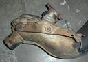
Here's the new heater box, as it was shipped to me.
This part is made by Dansk.
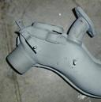
First, unhook the torsion spring from the
operating lever.
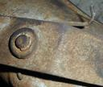
Next, remove the E-clip on the operating lever
pivot. If it's crusty, you might break it while removing it. No big
deal - just get another at the hardware store. I used a pair of
needle-nose pliers to remove it - sometimes it helps to use a small
screwdriver and pry between the clip and the pivot pin.
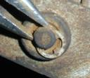
Now, remove the push clip on the flap arm pin. You
can just grab it with a pair of pliers and "walk" it off the pin.
Note the marks on the operating lever from the push clip...it is
normal for the flap arm pin to slide back and forth a bit in the
slot as the linkage operates.
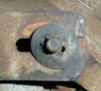
Now you can remove the lever from the old heater
box. Try it on your new one - you may be lucky. I
wasn't.
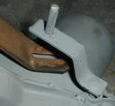
The problem was that the flap arm on the new box is
wider than the flap arm on the old box. For reference, the photos
have a US quarter, which is about 24 mm diameter.
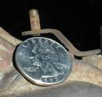
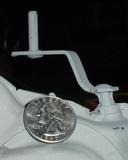
I just bent the lever with my hands to make up the
difference.
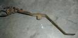 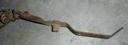
Now the problem is that the slot in the end of the
operating lever won't fit over the flap arm pin anymore. I put the
old lever on the new box (flap closed) and pivoted the operating
lever back and forth, scraping the underside of the lever against
the flap arm pin. Then I held the flap arm all the way open and did
it again. This will mark where the new slot needs to go on the
operating lever.
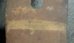
I drilled two holes, each a bit bigger than the
flap arm pin, in the operating lever to form a new slot. You might
prefer to drill one hole and lengthen the slot that is already in
the lever. Yeah, I got the slot a little off-center...
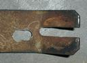
Put the operating lever on the new heater box and
work it through its complete range of motion. If it binds or hangs
up, you need to file the sides of the slot smooth, or lengthen the
slot by filing or drilling another hole.
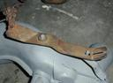
Once the slot is taken care of, you can work on the
operating lever pivot pin. The old one had a groove in the end for
the E-clip, and the new one was missing the groove. I put the
groove in with a cut-off wheel in a Dremel tool, but you could also
use a hacksaw. The groove needs to be as wide as your E-clip is
thick. The depth of the groove depends on what size E-clip you
have. If you're not sure, just duplicate the groove on the old
heater box as closely as you can. (Yes, the photo of the old heater
box pivot pin is horrible.)
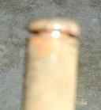 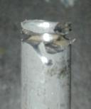
When you're done with that, you can work on the
torsion spring. On my old heater box, the skin had a hole in it to
anchor the torsion spring. It was missing on the new one. I just
used the old spring to locate the hole on the new box and drilled a
hole in the skin. Note that there is a little flat place in the
skin around the pivot pin - the hole should go on this flat
place.
Careful! Don't drill deep into the heater box, or
you might puncture the exhaust pipe inside! Just go through the
sheet metal skin of the box. If you want to make sure, put a little
tape around the drill bit about 1/8" (3 mm) from the point of the
bit, and only drill until the edge of the tape touches the
metal.
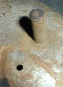 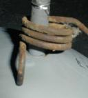
Once the torsion spring hole is drilled, you can
start putting it back together. Put the torsion spring over the
pivot pin, and put the lever on the pin. Make sure the flap arm pin
goes through the new slot you made. Work the operating lever back
and forth again a few times to make sure it works smoothly. Put the
E-clip on the end of the pivot pin.
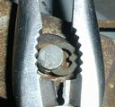
Put the push clip over the flap arm pin. Put one
end of the torsion spring in the hole you made and hook the other
end over the operatng lever. Lubricate the pivot points, and you're
done!
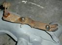
Last updated Sun Dec 17 03:59:59 CST 2000
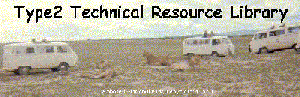